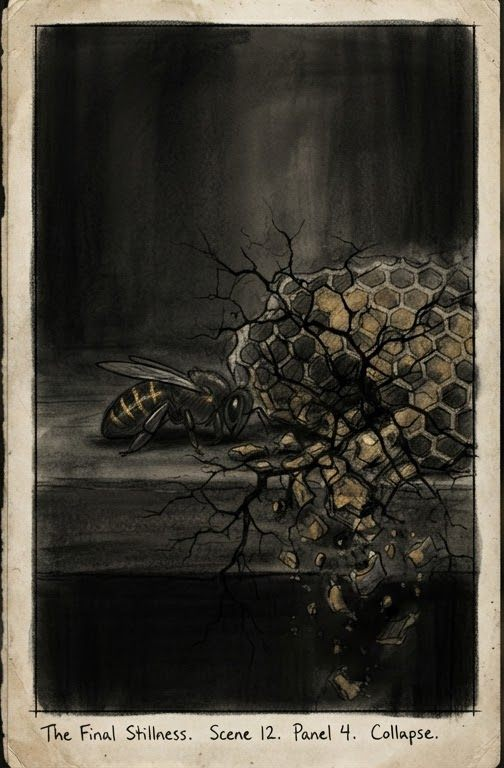

From raw manuscript to finished cinematic video.
Adung Studio Book is a local-first Windows desktop application that unifies long-form script engineering, timed storyboard animatics, offline neural voice synthesis, and multi-track FFmpeg rendering with Claude as your opt-in Editorial Director.

Make Claude your Editorial Director.
The hardest part of long-form video production is structural narrative coherence. Add your Anthropic API key and Adung Studio Book routes script drafting, scene revision, and visual beat planning directly to Claude via the official Python SDK.
1. Deep Narrative Drafting & Structural Editing
claude-opus-5-5 / claude-opus-4-7Synthesizes raw outlines or 15,000-word manuscripts into paced narration lines. Uses adaptive effort (output_config.effort="medium") and an 8,000-token minimum thinking budget so complex 3-act arcs never truncate mid-thought.
2. Scene Continuity & Visual Beat Planning
claude-sonnet-5-5Powers the Continuity Master and AI Visual Strategy modules. Extracts world anchors, character wardrobe locks, lighting palettes, and camera compositions for every narration beat without drifting across long timelines.
3. Multi-Market Cultural Script Localization
claude-haiku-4-5 / claude-sonnet-5-5Translates and adapts narration rhythm across English, Vietnamese, Japanese, Korean, Spanish, French, and German while preserving spoken syllable density so audio timings remain aligned with storyboard cuts.
# Opt-in Anthropic Messages API route (fail-closed, zero silent fallback)
POST /api/text-ai-settings
{
"text_ai_backend": "anthropic",
"text_ai_model": "claude-opus-5-5",
"fallback_policy": "fail_closed"
}
# Isolated env key prevents subprocess CLI billing collisions
KEY_ENV = "ADUNG_ANTHROPIC_API_KEY"
MIN_MAX_TOKENS_WITH_THINKING = 8000
client = anthropic.Anthropic(
api_key=key,
timeout=180.0,
max_retries=2
)
response = client.messages.create(
model=chosen,
max_tokens=max(max_tokens, 8000),
output_config={"effort": "medium"},
system=system_message,
messages=[{"role": "user", "content": prompt}]
)ADUNG_ANTHROPIC_API_KEY and strips sk-ant-* tokens from all diagnostic logs.
One project file from first word to final MP4.
Solo creators and production teams should not need five disconnected web tabs to ship one documentary or storybook episode. Every stage writes to a unified local SQLite project database.
Script & Editorial Beats
Draft or import a manuscript, normalize line pacing, and let Claude revise individual scenes with explicit overwrite confirmation.
Dense Visual Beats
Break narration into timed shots with explainer_animatic_v1 and generate consistent scene frames with locked character anchors.
Neural TTS & ASR Check
Synthesize warm narration using local Piper TTS and VieNeu-TTS with natural breath pauses (~180ms comma, 0.65s period) verified by Whisper ASR.
Sound Design & Master
Combine visual beats, voice tracks, and dynamic ambient soundscapes with -14 LUFS broadcast normalization into a finished 1080p MP4.
Built to protect expensive creative assets.
Long-form projects contain hundreds of generated frames and hours of synthesized audio. Adung Studio Book enforces strict preview-before-apply boundaries and automatic database backups.

Storyboards you can audit at a glance.
Every shot preserves its exact scene index, panel number, narrative role, and continuity anchor so 60-minute documentaries stay navigable.
- Scene-level character & world anchor locking
- Non-destructive visual plan preview (0 external calls)
- Explicit confirmation before replacing existing plans
- Automatic SQLite snapshot backup prior to every apply
Explainer Animatic (explainer_animatic_v1)
Paces narration into timed phrase cuts and micro-states using the ink_explainer_dense global preset. Previewing inspects script and audio timings with external_calls: 0. Applying writes to visual_beats and visual_beat_scenes only after creating a verified database backup.
100% Local-First Windows Application
Runs as a dedicated native desktop executable with its own local FastAPI + SQLite core. Your project databases, voice references, custom BGM folders, and API credentials stay on your hardware under %LOCALAPPDATA%\KJStickmanStudio or your dedicated work drive.
Six specialized engines inside one studio.
Claude Editorial Director
Direct Anthropic Messages API integration supporting Opus 5.5, Sonnet 5.5, and Haiku 4.5 with thinking budget management and refusal handling.
Continuity Master
Tracks canonical world IDs, character appearances, camera framing, and lighting palettes across multi-chapter storyboards.
Dense Beat Planner
Splits spoken narration into timed visual beats and micro-states with zero-cost preview and rollback-safe database application.
Offline Neural Voice Studio
High-speed CPU/GPU voice generation with natural comma/period breath rules, speed tuning (0.88x storytelling), and SRT/JSON export.
Cinematic Sound Design
Automated mood-matched soundscapes, dialogue ducking, and -14 LUFS loudness normalization for YouTube and audiobook publishing.
Timeline & Export Guard
Prevents black-frame regressions, script-line ID collisions, and missing-media exports before committing GPU/FFmpeg render time.
Built for solo storytellers and media studios.
Bring your own Anthropic API key (BYOK) for transparent token costs, or deploy our managed multi-seat studio workflow.
For solo YouTube documentary, audiobook, and Book Noir creators.
- Native Windows Desktop App (v2.55)
- Claude API BYOK (
ADUNG_ANTHROPIC_API_KEY) - Explainer Animatic & Storyboard Planner
- Local Piper & VieNeu Neural TTS
- 1080p FFmpeg Render + SRT/JSON Export
For high-output channels producing daily long-form localized videos.
- Everything in Indie Creator
- Full Claude Opus 5.5 & Sonnet 5.5 Editorial Suite
- Continuity Master & Composite Prompt Planner
- Multi-Market Localization (EN, VI, JP, KR, ES, FR, DE)
- Automated Sound Design & -14 LUFS Mastering
- Priority founder engineering support
For multi-channel networks and custom Anthropic Claude pipelines.
- Multi-seat workstation licensing
- Custom narrative presets & brand style locks
- Dedicated batch rendering & QC gates
- Direct architectural onboarding with the founder
Common questions about our Claude integration.
How does Adung Studio Book connect to Anthropic Claude?
When you opt into the anthropic backend via POST /api/text-ai-settings and set ADUNG_ANTHROPIC_API_KEY, the app calls the official Anthropic Python SDK (client.messages.create) directly for script drafting, scene revision, and editorial analysis.
Why does the app use ADUNG_ANTHROPIC_API_KEY instead of ANTHROPIC_API_KEY?
Isolation by design. Keeping a dedicated environment variable ensures that desktop API calls never silently alter how local developer CLI tools authenticate on the same workstation.
Does applying a visual plan overwrite my existing script or audio?
No. Explainer Animatic previews run with zero external calls, and applying a plan automatically creates a timestamped SQLite backup while preserving your script lines, WAV files, and timeline clips.
How do I request a build, license key, or startup partnership?
Write directly to the founder at founder@claudeadung.space. Every inquiry is answered directly by the engineer who builds Adung Studio Book.
Try Adung Studio Book on your next production.
Adung Studio Book is engineered and maintained by its founder. Reach out directly for desktop builds, API workflow demos, or technical verification.
founder@claudeadung.space